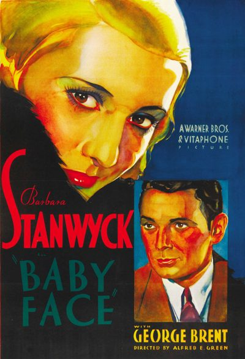

Baby Face

Starring: Barbara Stanwyck, George Brent, Henry Kolker
Director: Alfred Edward Green
Writer: Gene Markey, Darryl F. Zanuck
Producer: William LeBaron, Raymond Griffith
Baby Face is a 1933 American pre-Code romantic comedy drama film directed by Alfred E. Green for Warner Bros. Pictures, starring Barbara Stanwyck as Lily Powers, and featuring George Brent. Based on a story by Darryl F. Zanuck (under the pseudonym Mark Canfield), Baby Face portrays a young woman who uses sex to advance her social and financial status.
Trivia
- Pictures' answer to MGM's Red-Headed Woman (1932) starring Jean Harlow, another pre-Code Hollywood film with a similar theme.
- Production head Darryl F. Zanuck wrote the treatment for the film and sold it to Warner Bros. for a dollar.
- The Great Depression was having a devastating effect on the film industry at the time, and many studio personnel were voluntarily taking salary cuts to help.
Previous Showings
6 Runs • 4 Festivals
Original Billings: 1 run (July 21, 1933)
Original Run: July 21, 1933 (Friday - Saturday)
All runs on record (6):
- July 21, 1933 (Friday - Saturday)Barbara Stanwyck - "please do not bring children!"
- September 3 - 6, 1994w/ Employees' Entrance
- October 2 - 4, 2002Fall Folliesw/ The Lady Eve
- August 25 - 26, 2005Summer 2005w/ Employees' Entrance
- March 21 - 23, 2014Starring Barbara Stanwyckw/ Night Nurse
- September 7 - 8, 2017Warner Brosw/ Now, Voyager